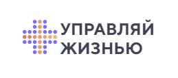

Сделать лендинг для клиники «Управляй жизнью», донести выгоды предлагаемого подхода к заботе о здоровье, рассказать о врачах, дать возможность пользователю связаться с клиникой по различным вопросам, выполнить требования закона к медицинским сайтам.
Главное — здоровье! Эту аксиому подтверждает и пирамида потребностей Маслоу, и традиционные тосты на любом застолье, и пандемия COVID-19.
На практике забота о здоровье на первое место выбирается только при крайней необходимости. К врачу идём когда уже заболели, диагноз ставим самостоятельно с помощью Интернета, лечение берём оттуда же и сами же назначаем. Связана такая культура российского здравоохранения с огромным количеством факторов, думаю, каждый парочку назовёт.
К счастью, технологии развиваются быстро, и уже сейчас позволяют не только спросить на «Ответы Mail.ru», почему температура не падает от компресса из чайных пакетиков, но и предлагать населению качественно новый подход к заботе о себе и близких людях.
02
Клиент
Ставропольская клиника «Управляй жизнью». Лицензированное медицинское учреждение, оказывает услуги по диагностике, обследованию и лечению широкого спектра заболеваний у взрослых, детей и пожилых.
Пионеры нового подхода: вместо привычного «заболело — полечили» предлагают годовую подписку на целый комплекс услуг: личный врач с возможностью удалённой консультации по любому поводу, регулярные комплексные обследования, профессиональную помощь при психологических проблемах, доступ к закрытым лекциям, приём профильных специалистов в день записи.
В медицинских учреждениях все цвета спокойные: белый, салатовый, спокойный синий или фиолетовый. Фирменный стиль «Управляй жизнью» полностью своей профессиональной областью соответствует, но выделяется различными оттенками оранжевого.

В дизайне использовали белый фон (классика для медицинских сайтов), градиент из синего в фиолетовый для декоративных элементов и выделения некоторого контента, оранжевый градиент - для кнопок.
Иллюстрации сделали с персонажами, максимально дружелюбные и «житейские», знакомые всем. Добавили к ним немного сюжетной анимации: и сайт динамичнее, и взаимодействовать с ним интереснее.
Форма обратной связи не совсем обычная, позволяет обратиться по любому поводу. Письмо из формы в зависимости от темы сразу придёт тому, кто работает с обращением, без пересылки с общего ящика.
При выборе клиники пользователю важно понимать, что за люди будут помогать ему следить за собственным здоровьем. Чтобы показать человеческий облик «Управляй жизнью», добавили обращения главного врача, видео и фото врачей с информацией о квалификации каждого.
При проработке адаптивной версии особое внимание уделили смартфонам, проектировали так, чтобы с сайтом было удобно работать большим пальцем даже на больших экранах.
Законодательство
Если вы делаете сайт медицинского учреждения с демонстрацией услуг и записью, нужно обязательно:
написать под футером «имеются противопоказания, необходима консультация специалиста»;
выложить ссылки на лицензию, свидетельство о постановке на учёт (если клиника частная) и санитарно-эпидемиологическое заключение.
Это не исчерпывающий список, но для одностраничных сайтов частных клиник общего профиля обычно указанных действий обычно достаточно.
Админка
Использовали October CMS. Почему целая CMS для лендинга? Планируем развивать проект до многостраничного сайта, сразу используем Laravel, а контент-менеджерам нужна админка для управления содержимым сайта. Звёзды сошлись, так сказать :-)
Результат
Приветливый и приятный глазу одностраничный сайт, который мотивирует пользователя по-новому заботиться о себе и близких, и приглашает узнать больше о клинике «Управляй жизнью». Даже Instagram можно посмотреть!
Выбирайте здоровье и благополучие, управляйте своей жизнью и здоровьем, заходите на mydoctor24.ru.